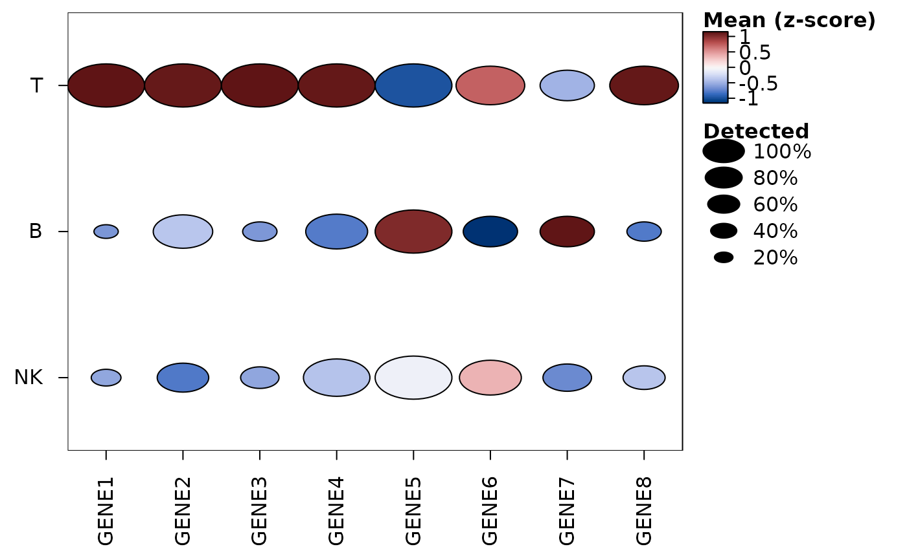

heat_map_read_h5ad() opens an AnnData file, as written by scanpy
and anndata in Python (or downloaded from CELLxGENE), for
heat_map, heat_map_dot,
heat_map_summarise, heat_map_markers,
heat_map_score and heat_map_smooth, without
Python, reticulate or a conversion to another class. The metadata of the
cells (obs) and features (var) are read at once; a matrix of
values - X, a layer such as "counts", or "raw" - is
read the first time it is used, as a sparse dgCMatrix (CSR and CSC
matrices are read without copying or sorting them) or a dense matrix, and
kept with the object for the next heatmap. A file name ending in
.h5ad can also be given to these functions in place of the object,
when it is read each time.
Value
an object of class heat_map_h5ad: a list with the
file, the metadata of the cells (obs) and features
(var, and raw_var for raw), and the matrices it
holds (assays: "X", the layers and "raw"), chosen
with assay.
Details
Columns of obs become the metadata used by group_by and
annotation_by: categorical columns as factors (with their levels and
missing values), strings as character vectors, and numbers and booleans
as they are, with the masks of nullable columns as missing values. Files
written by anndata 0.7 (with categories in __categories) and later
are read. Features are named by the index of var and can also be
named by a column of gene symbols or IDs (feature_name,
gene_symbols, gene_name, symbol or gene_ids),
e.g. the symbols of a CELLxGENE file whose index holds Ensembl IDs.
Examples
if(requireNamespace("hdf5r", quietly = TRUE)) {
# 60 cells of three types written by anndata
file <- system.file("extdata", "example.h5ad", package = "HeatmapR")
cells <- heat_map_read_h5ad(file)
cells
heat_map_dot(cells, features = paste0("GENE", 1:8), group_by = "cell_type",
popup = FALSE)
# The counts of a layer, summed in each type of cell and sample
heat_map_summarise(cells, assay = "counts", group_by = c("cell_type", "sample"),
fun = "sum")[, 1:4]
}

#> GENE1 GENE2 GENE3 GENE4
#> T / s1 41 41 51 40
#> T / s2 38 57 32 45
#> T / s3 39 45 42 41
#> T / s4 40 37 36 38
#> B / s1 0 4 1 6
#> B / s2 0 7 0 5
#> B / s3 1 2 0 6
#> B / s4 1 5 4 9
#> NK / s1 2 2 1 6
#> NK / s2 0 3 2 6
#> NK / s3 1 5 1 5
#> NK / s4 0 1 1 8